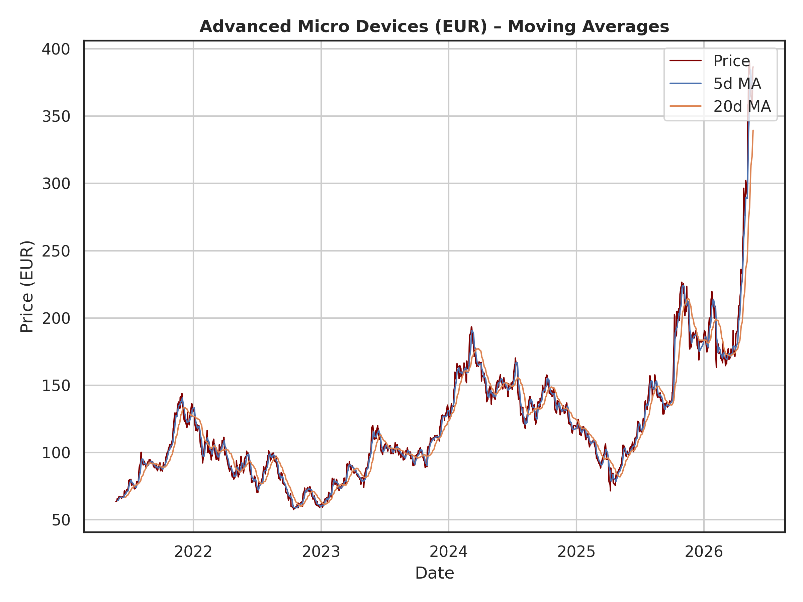
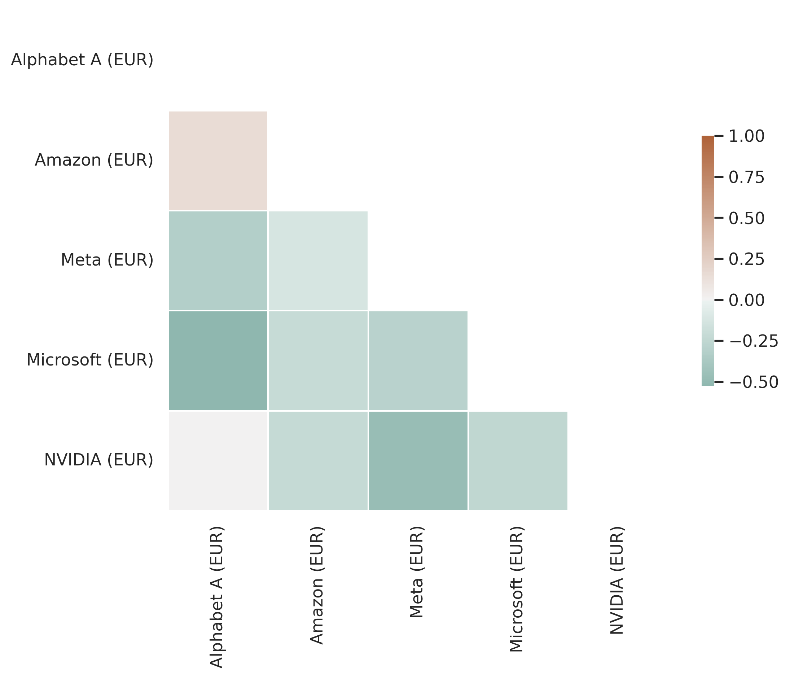
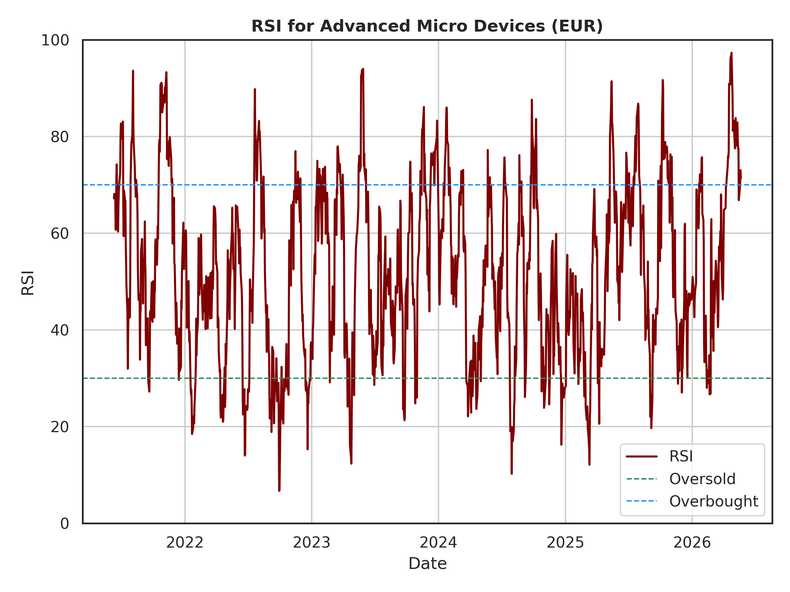
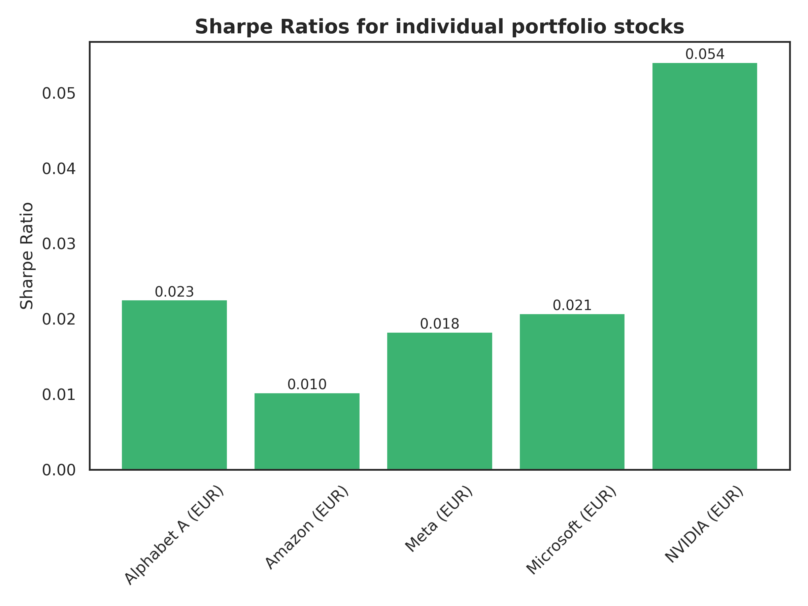
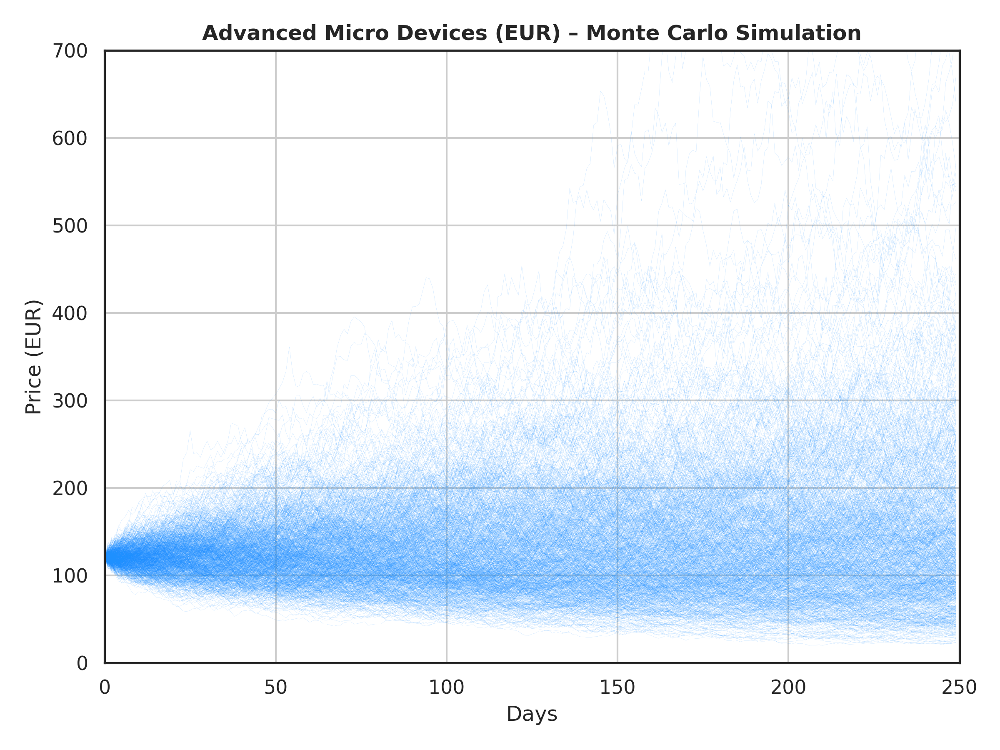
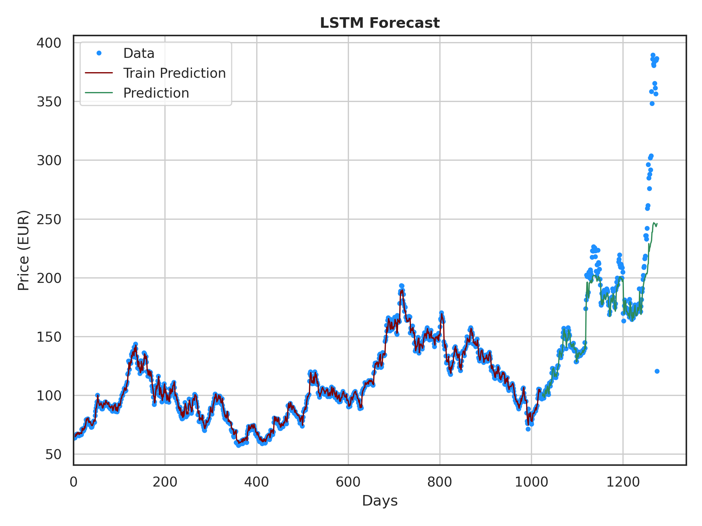

StkView Project Portfolio
This a comprehensive quantitative analysis tool that takes raw stock‑price CSV files, cleans and normalizes the data, then performs a series of statistical, risk‑management and predictive calculations that are core to modern finance.
The first step loads the CSV, parses dates, converts string‑based numbers to proper floating‑point values, and imputes missing observations with column means, which guarantees that later calculations are not distorted by incomplete records. Descriptive statistics follow, providing mean, standard deviation, minimum and maximum for each price series, giving analysts a quick sense of central tendency, dispersion and overall volatility—foundations for any further quantitative work.
The simple moving average (SMA) is calculated by taking the arithmetic mean of a fixed‑length window of price points, and it forms the backbone of the moving‑average lines plotted in the technical‑indicator section of StkView.py. By smoothing out short‑term price noise, the SMA reveals the underlying trend direction: an upward‑sloping SMA indicates a bullish bias, while a downward‑sloping SMA signals a bearish bias. Traders and analysts use the SMA to generate simple entry and exit cues — commonly a short‑term SMA crossing above a longer‑term SMA suggests a buying opportunity, and a cross below signals a sell or short signal. Because it relies only on price data and a straightforward averaging rule, the SMA is easy to interpret, widely supported across trading platforms, and serves as a foundational technical tool for trend following, volatility assessment, and the construction of more complex strategies such as moving‑average crossover systems. A plot for the stock of Advanced Micro Devices is shown here:

The script then moves to portfolio construction. By reading a separate CSV that lists each stock together with its allocated weight, it verifies that the number of assets matches the number of weight entries, computes the portfolio’s daily returns through a weighted sum of individual asset returns, and derives portfolio‑level risk metrics such as volatility (the standard deviation of returns) and Value at Risk at a user‑specified confidence level. These metrics quantify the potential downside and the consistency of returns, which are essential inputs for risk‑adjusted performance evaluation, capital allocation decisions and regulatory reporting.
The following correlation heatmap visualizes how each asset’s returns move together, helping analysts detect diversification opportunities and systemic risk exposure. Technical indicators are calculated for a selected ticker: moving averages overlay short‑term price trends on longer‑term direction, while the Relative Strength Index (RSI) flags overbought (typically above 70) and oversold (typically below 30) conditions. The RSI is valuable because it offers a simple, widely accepted measure of momentum that can be combined with other signals to time entries and exits, and it is frequently used in trading strategies and technical analysis across equity, commodity and foreign‑exchange markets. The RSI-plot for the stock Advanced Micro Devices is shown:.


The Sharpe ratio analysis computes risk‑adjusted returns for each individual asset by dividing excess return over a risk‑free rate by volatility, then visualizes the results. This metric enables investors to compare the efficiency of different holdings on a common scale, supporting portfolio optimization, performance attribution and the selection of assets that deliver the best return per unit of risk. A bar chart covering the portfolio's Sharpe-Ratio's is visualized here:

Monte Carlo simulation takes the most recent price observation, estimates its volatility, and then generates thousands of possible future price paths by modeling random log‑normal price movements. By exploring a wide distribution of outcomes, the simulation supports stress testing, scenario analysis and the estimation of extreme‑event probabilities, which are crucial for risk management, VaR calculations, and building robust trading strategies that can withstand market turbulence. One example for a Monte Carlo simulation is plotted here:

Finally, the LSTM (Long Short-Term Memory) neural network module transforms a time‑series of prices into input‑target pairs based on a configurable look‑back window, trains a recurrent network to capture temporal dependencies, and forecasts future price points. LSTM forecasts are particularly powerful for algorithmic trading and quantitative risk models because they can learn non‑linear dynamics, long‑term patterns and complex temporal structures that simpler statistical models cannot capture. The resulting forecast plot allows analysts to compare predicted versus actual price movements, assess model accuracy, and generate actionable signals for execution or risk mitigation. Prediction using LSTM for the stock of AMD is shown below:

In sum, StkView.py integrates data preparation, statistical description, portfolio construction, risk measurement, technical analysis, scenario simulation and deep‑learning forecasting into a single workflow. Each component provides a distinct but complementary view of market behavior, which supports managing risk, develop trading strategies for a data-driven decision-making.
GitHub: github.com/markus-schindler/StkView